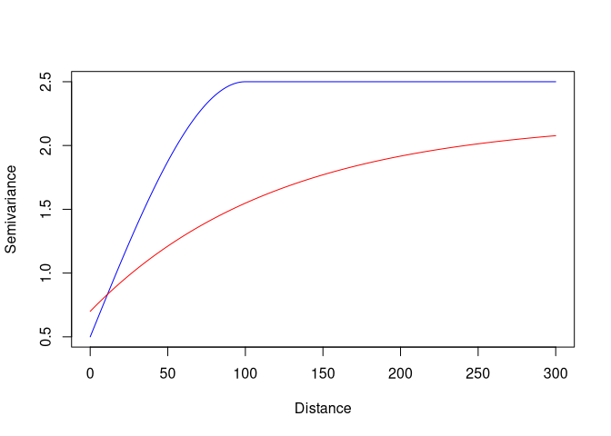

The goal of sacmetrics is to calculate spatial autocorrelation metrics for spatial data.
Installation
You can install the development version of sacmetrics from GitHub with:
# install.packages("pak")
pak::pak("Nowosad/sacmetrics")Example
library(sacmetrics)
library(gstat)
vgm_model1 = vgm(psill = 2, model = "Sph", range = 100, nugget = 0.5)
vgm_model2 = vgm(psill = 1.5, model = "Exp", range = 120, nugget = 0.7)
plot(variogramLine(vgm_model1, maxdist = 300), type = "l", col = "blue",
xlab = "Distance", ylab = "Semivariance")
lines(variogramLine(vgm_model2, maxdist = 300), col = "red")
vgm_auc(vgm_model1, maxdist = 300)
#> [1] 675.0004
vgm_auc(vgm_model2, maxdist = 300)
#> [1] 494.7753
vgm_compare(vgm_model1, vgm_model2, maxdist = 300)
#> [1] 0.733Contribution
Contributions to this package are welcome – let us know if you have any suggestions or spotted a bug. The preferred method of contribution is through a GitHub pull request. Feel also free to contact us by creating an issue.
Acknowledgments
The initial development of this R package was made possible through the financial support of the European Union’s Horizon Europe research and innovation programme under the Marie Skłodowska-Curie grant agreement No. 101147446 and further supported by the Federal Ministry for Economic Affairs and Climate Action of Germany (project No. 50EE2009).

References
- Kerry, R., & Oliver, M. A. (2008). Determining nugget: sill ratios of standardized variograms from aerial photographs to krige sparse soil data. Precision Agriculture, 9(1), 33-56.
- Vaysse, K., & Lagacherie, P. (2015). Evaluating digital soil mapping approaches for mapping GlobalSoilMap soil properties from legacy data in Languedoc-Roussillon (France). Geoderma Regional, 4, 20-30.
- Poggio, L., Lassauce, A., & Gimona, A. (2019). Modelling the extent of northern peat soil and its uncertainty with sentinel: Scotland as example of highly cloudy region. Geoderma, 346, 63-74.